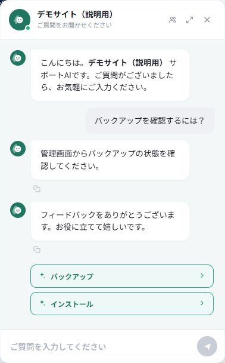
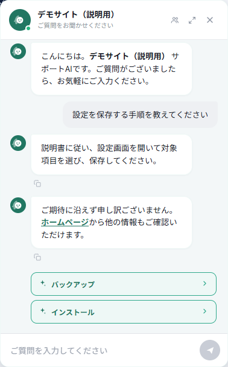

FAQ HUB · ĐẶC TẢ CHƯƠNG TRÌNH
Nút hữu ích trên widget
Phản hồi chỉ hiển thị trên giao diện
Hai nút 👍/👎 nằm dưới câu trả lời trong widget. Không có màn hình thống kê đánh giá, không gửi điểm lên API và không ghi database.
Bấm 👍 — 役に立った

Hai nút của câu trả lời đó được ẩn. Widget thêm lời cảm ơn ngay trong cùng cuộc hội thoại; không chuyển trang và không gọi AI.
Bấm 👎 — 役に立たなかった

Hai nút được ẩn và widget hiện lời hướng dẫn kèm liên kết ホームページ. Chỉ khi bấm liên kết mới mở trang chủ đã cấu hình. Không tự tìm nguồn khác hoặc sinh lại đáp án.
Trạng thái đã bấm chỉ nằm trong bộ nhớ giao diện hiện tại; không được lưu như một đánh giá trong lịch sử chat. Tải lại trang không phục hồi trạng thái nút từ database.